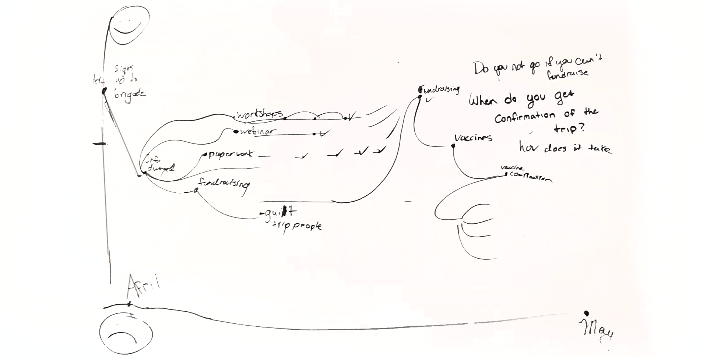
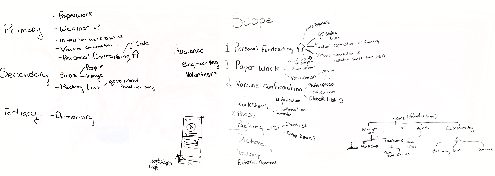
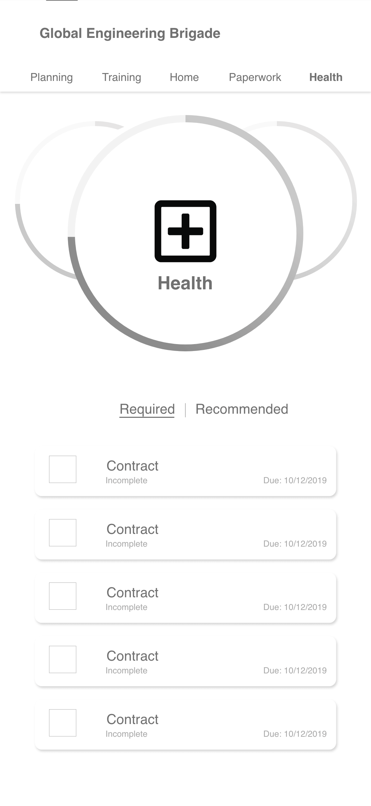
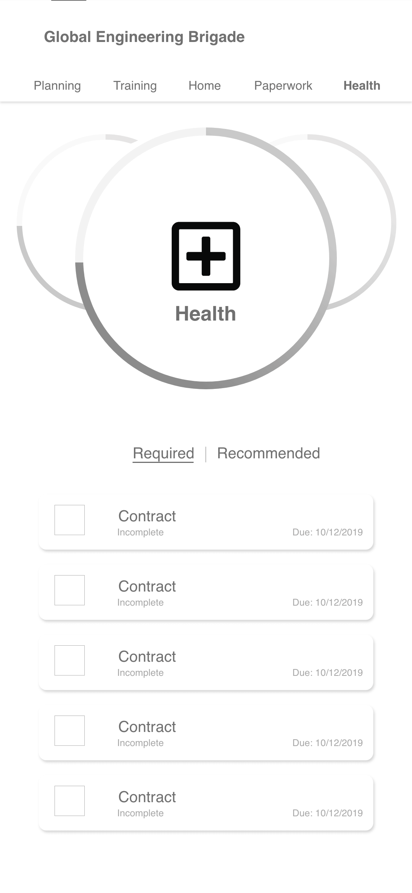

Defining scope
- Interview
- Research
A Mobile App that simplifies and consolidates the entire process of becoming a Brigadier. A complete journey from fundraising, preparing your paperwork and health status, to providing information about important workshops and external resources.
Defining scope
Mapping journey
Wireframing
Prototyping
Wesley Slade and Heather Mazzonna
Through research, a user journey, and a small interview with one of the previous brigadiers we established that there’s a very high cognitive load for users during this process. In addition to fundraising, completing paperwork and other planning, brigadiers also have to balance their studies.
Our solution tackles the core problems to any long complicated process by helping users build a mental model of the process. It breaks down the problems into smaller to tackle sections and uses a hub-spoke style of information architecture. This enables users to keep a broad overview of the progress while also being able to focus down on the details when they need to.
 

We clearly identified that fundraising in a priority for end-users, giving users access both a QR code and copy a donation link to their clipboard right on the dashboard allows them quickly share it for donations on the fly. This facilitates ease of use and allows users to quickly check their fundraising status at any point during the process.
We also established that users have a lot of things they have to submit. Things like waivers, consent forms, other mandatory paperwork needs to be submitted before trips and verified by organizers. Giving users the freedom to do this from their own device and using notifications to alert the user about problems or confirmations give them peace of mind.
Health concerns are also a pretty big priority for users and need to be dealt with weeks in advance. We gave users the information on what shots are required/recommended as well as allowing them to upload proof of vaccination directly in the app.
Because there are many different brigades, we also wanted to create reusable appearence, style of the app. The same mobile app design can also be used in case of rebranding.
If having more time some visual design inconsistency would have been resolved as well as prototyping glitching. Also, the lack of the actual content made it harder to develop solution at the starting moment.